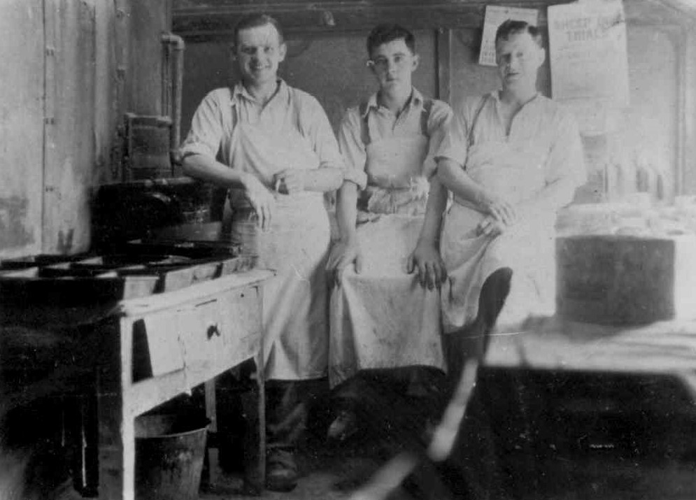
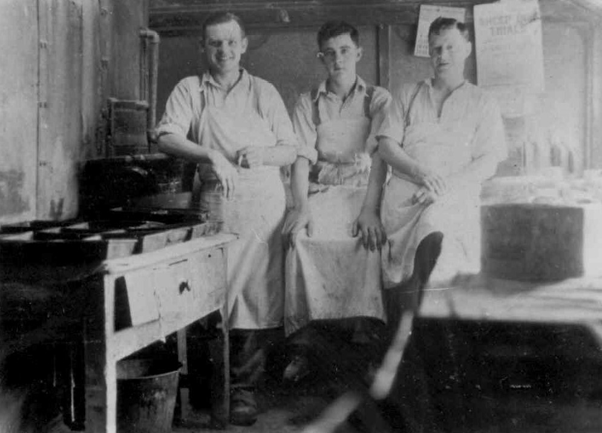

The Bakery
In the 1911 census, Hugh Owens from Caernarfon ran the bakery. By 1926, Cemlyn Roberts owned it. In the 1940s, Mary Griffith (Mary Fron) moved her business and her zinc hut to run the bakery and her shop from Gwalia. The bakery remained there until the early 1970s. Adam Hughes and the other quarrymen used to pop into the bakery after work on Saturday afternoons to have round cakes, jam, and apples.
Huw Owens, the baker was a jolly and funny fellow. Later on, the Bakery was owned and run by Cemlyn Roberts, Morfudd Owen’s father (Morfudd later ran Pen-y-groes Shop, with her husband Evan Wyn). During Cemlyn Roberts’ period as baker, on a Saturday afternoon, Adam Hughes and the other quarrymen used to pop into the Bakery on the way home to buy round cakes, jam and apples.
In the 1940s, Mary Griffith, Fron came to run the Bakery in Gwalia. She even moved the contents of her zinc hut to Gwalia as well. Mary and William Griffith’s son (William being related to the family in Cambrian), Alan Jones, became famous as a sheepdog handler. The bakery remained there until the early 1970s.
Here are some funny poems by the villagers:
 A photograph from the 30s/40s in front of the bakery. There is a baker’s cart and a truck to carry water. You can see Owen the butcher’s shop further down the hill.
A photograph from the 30s/40s in front of the bakery. There is a baker’s cart and a truck to carry water. You can see Owen the butcher’s shop further down the hill.
Huw Owen becar sy’n hen gono
Yn y becws yn tylino
(Huw Owen, the baker is a character
In the Bakery kneading dough)
Yng Nghaermynydd mae dwy gath fanw
Un i Lizzie Jane a’r llall i Sianw.
(In Caermynydd there lives two lady cats
One for Lizzie Jane and the other for Sianw).
Wil bach Faenol sy’n un doniol
Gwisgo trowsus gwyn a sgidiau m’lynion.
(Wil bach from Faenol is a funny one
Wearing white trousers and yellow shoes).
Census Facts:
 In front of the bakery, 1926 – Cemlyn Roberts, Mrs Roberts and Mrs Roberts, Faenol, the daughter, near the bread cart.
John Jones (Rhianfa) Ieuan Jones (Tan y Bwlch) and Edwin Williams (Bodelen) in the bakery in the 1940s
In front of the bakery, 1926 – Cemlyn Roberts, Mrs Roberts and Mrs Roberts, Faenol, the daughter, near the bread cart.
John Jones (Rhianfa) Ieuan Jones (Tan y Bwlch) and Edwin Williams (Bodelen) in the bakery in the 1940s